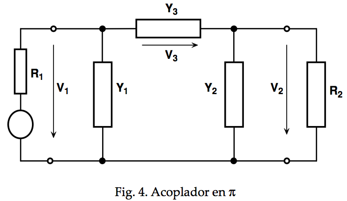

Los acopladores de impedancia son elementos indispensables para conseguir la máxima transferencia de potencia entre circuitos, ya sean amplificadores, osciladores, mezcladores, etc. Un caso de aplicación importante es en el acoplamiento de líneas de transmisión y antenas. La idea básica del acoplador se ilustra en la figura 1, en que un generador, de impedancia ZG = RG + jXG suministra potencia a una carga de impedancia ZL = RL + jXL. para que la transferencia de potencia entre generador y carga sea máxima, es necesario que sus impedancias sean complejas conjugadas, es decir ZG = ZL*, en que ZL* es el complejo conjugado de ZL, es decir RL – jXL.
La función del acoplador es, por consecuencia, hacer que el generador “vea” en sus terminales una impedancia compleja igual al conjugado de su impedancia interna, es decir, ZG* = RG - jXG y del lado de la carga, la impedancia de salida del acoplador debe ser igual al complejo conjugado de la impedancia de carga, ZL*.
En estas condiciones, se dice que las impedancias están acopladas, o adaptadas, en base a las impedancias imagen. Esto significa que tanto el generador como la carga, “ven” en sus terminales las imágenes (el conjugado) de sus respectivas impedancias. Esto puede realizarse con circuitos formados por reactancias puras y, en el caso más simple, mediante un transformador.
En general, es deseable que en el acoplador no se disipe potencia, por lo que es frecuente implementarlos con elementos puramente reactivos (bobinas y condensadores), lo que da lugar a varias geometrías posibles: L invertida, T y Π. La teoría de los acopladores de impedancia se basa, principalmente, en la aplicación de los teoremas de Thèvenin y Norton. Sin embargo, hay que llamar la atención sobre las limitaciones de los circuitos equivalentes de Thévenin y Norton, ya que dicha equivalencia es válida para la corriente de carga y no para las condiciones internas del generador. Si no se tienen en cuenta estas limitaciones, los resultados que se obtienen pueden ser absurdos. Otro aspecto adicional a tener en cuenta es que los circuitos equivalentes de Thévenin o Norton, pueden usarse para calcular la eficiencia de los circuitos
En la práctica, la mayoría de las antenas requieren de acopladores de impedancia entre la línea de transmisión y los elementos radiadores. La implementación de estos acopladores puede hacerse diversas formas, dependiendo de la frecuencia y potencia de funcionamiento. En el análisis de los acopladores de impedancia se suele emplear la convención de que, si el circuito retarda o retrasa una señal por θo, se dice que el defasamiento es negativo (capacitivo) y, si la adelanta, el defasamiento es positivo (inductivo). Las configuraciones más utilizadas son por lo general tres: L, T y π.
Los acopladores que se muestran son asimétricos o no balanceados, tal como se requiere en el caso de líneas coaxiales. En el caso de acopladores simétricos o balanceados, la reactancia de la rama en serie debe dividirse por dos. Las fórmulas de diseño que se dan en las secciones siguientes son válidas cuando las impedancias del generador y la carga son resistencias puras. Si estas impedancias son complejas la solución se complica considerablemente y, al momento de escribir esto, no se ha encontrado un tratamiento completo y adecuado del problema, si bien se utilizan también métodos gráficos. Aquí no trataremos este problema.
Acoplador en L
El acoplador en L es el más simple y se configura con dos reactancias, una en serie y otra en paralelo como se muestra en la figura 23. la Q con carga del circuito se calcula mediante la fórmula (1). La ecuación 2 define la reactancia en paralelo, que es negativa (capacitiva) cuando θ es negativo e inductiva cuando θ es positivo. La resistencia R2 en paralelo con la reactancia X2 debe ser siempre mayor que R1. El acoplador en L no puede usarse para ajustar la fase independientemente de la resistencia.
Acoplador en T
Este tipo de acoplador, en la configuración mostrada en la figura 3 se usa tambien cuando las impedancias de carga y del generador son puramente resistivas. Tiene la propiedad de que el defasamiento es independiente de la relación entre las resistencias de entrada y salida y puede considerarse como formado por dos acopladores en L conectados espalda con espalda. En este circuito se tienen dos Qs con carga, una Q de entrada y otra de salida. Para calcular el ancho de banda del acoplador T, debe ignorarse la Q menor y, por otra parte, la Q del circuito aumenta cuando aumenta el defasamiento.
Acoplador en π
Este acoplador, mostrado en la figura 4, también puede considerarse como formado por dos acopladores en L y son válidas las consideraciones sobre la Q con carga realizadas para el acoplador T. En este caso se utilizan susceptancias en lugar de reactancias, a fin de simplificar los cálculos. La resistencia en el punto medio de una red π siempre es menor que R1 o R2. Se considera, además, que una red π es de retardo o fase negativa cuando Y3 es positiva y viceversa.
